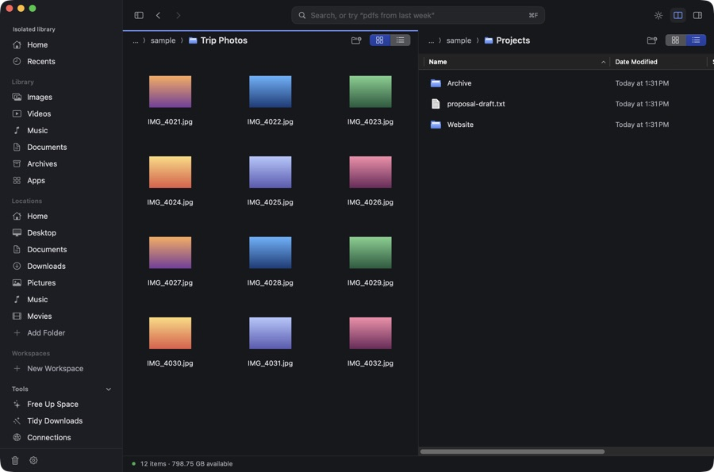
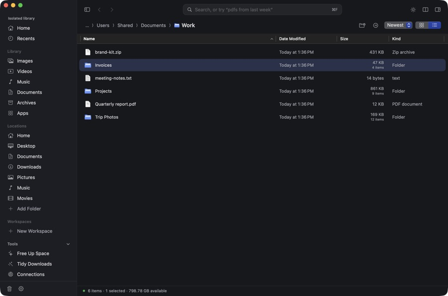
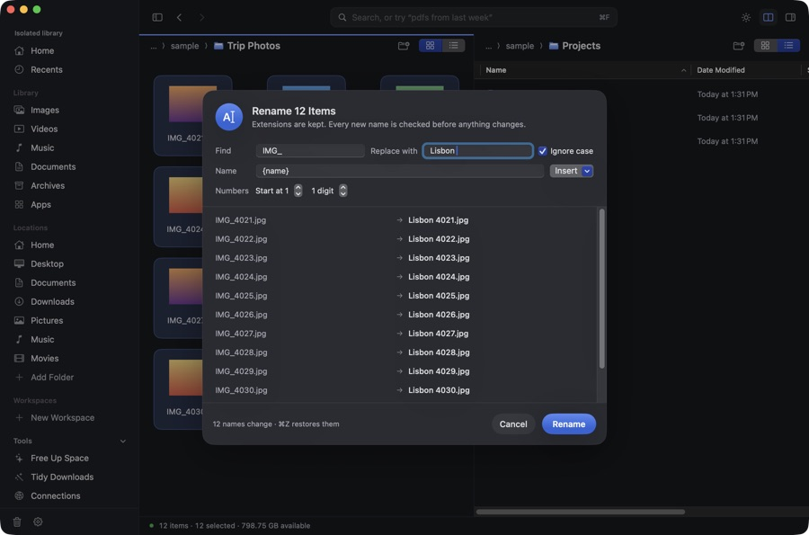

File management in MacEx: two panes, batch rename, tags and servers
Updated

Browse any folder
Click a location in the sidebar, or press ⇧⌘G to go to a folder by path. Press ⌘L to edit the path bar, and ⌘[ and ⌘] to go back and forward. Folders open inside MacEx; files open in their usual app.
- Grid or list. ⌘1 shows thumbnails, ⌘2 shows a list with name, date, size and kind. Sort by any column, with folders first if you like.
- Folder sizes. The list view works out how big each folder is in the background and shows its item count. If some items can’t be read, or are online-only iCloud files, the size is marked as partial.
- Hidden files. Turn on Show Hidden Files in the folder toolbar to see dotfiles. MacEx remembers the choice.
- Right-click actions. Quick Look, Copy Paths, Duplicate, Compress, Tags, Add to Workspace, and Add Folder to Sidebar.

Copy, move and rename without overwriting
The usual commands are all here: ⇧⌘N for a new folder, Return to rename, ⌘D to duplicate, ⌘C and ⌘V to copy and paste, and ⌘⌫ to move to Trash. You can drag files into folders, onto a workspace, or out to other apps.
If a file with the same name is already there, MacEx asks whether to Keep Both or Skip. It never replaces or merges an existing item. Long copies show progress and can be cancelled. ⌘Z undoes moves, renames, Trash and batch renames.
Rename many files at once
Select several files, right-click and choose Rename Items. You can find and replace text, or build new names from a template:
{name}is the current name,{n}is a sequence number (pick the start and the number of digits), and{date}is the date modified asyyyy-MM-dd.- For example,
Lisbon {n}with two digits turns twelve camera files intoLisbon 01.jpgtoLisbon 12.jpg. - File extensions are always kept.
The preview shows every old and new name before anything changes, and flags any clash with a name that already exists. One click renames up to 10,000 items, and ⌘Z puts the old names back.

IMG_4021.jpg into Lisbon 4021.jpg.Zip and unzip
Right-click and choose Compress to make a .zip, or Extract on a zip to unpack it next to itself. MacEx uses ditto, the same tool Finder uses. It writes to a temporary name first, so a cancelled or failed run leaves no half-written archive. Only zip is supported. MacEx does not open RAR, 7z or tar files.
Finder tags and workspaces
Tags you set in Finder appear in the MacEx sidebar, and clicking one lists every file with it. To tag files, select them, right-click and choose Tags, or type tags in the Inspector (⌘I). Tags are stored as normal macOS tags, so Finder sees them too.
Workspaces are named pages in the sidebar that collect files and folders from anywhere: a client project, a tax year, a trip. Choose File › New Workspace, then drop files on it or right-click and choose Add to Workspace. Nothing is copied or moved. If an item is moved or deleted, the workspace shows it as unavailable.
Network shares and servers
- SMB shares (Windows PCs and NAS drives). On the Connections page, type an address such as
smb://nas.local/Media. macOS asks for the password and can keep it in your keychain. MacEx never sees the password. The share then opens as an ordinary folder, and Split View, copy and move, batch rename and tags all work on it. - SFTP servers. Press ⌘K to connect with a password, a private key or your SSH agent. MacEx shows the server’s host key the first time so you can check it, and blocks sign-in if the key later changes. You can browse, upload, download, rename, make folders and preview files. It doesn’t copy whole folders at once, delete on the server, open a terminal or sync folders. More on SFTP and SMB
What MacEx file management doesn’t do
- No tabs and no extra windows. MacEx uses one window, with Split View for two folders at once.
- No column view. Folders show as a grid or a list.
- No built-in Terminal, Git status or permissions (chmod) editor.
- No folder sync, file comparison or file conversion.
If you need those every day, a dedicated dual-pane file manager is a better fit (see the best Finder alternatives for Mac). MacEx is for people who want everyday file management and the ability to find, preview and clean up files in the same app. See MacEx vs Finder for a feature-by-feature comparison.
Related
MacEx runs on macOS 14 or later, Apple silicon and Intel. One-time purchase, no account, no subscription.